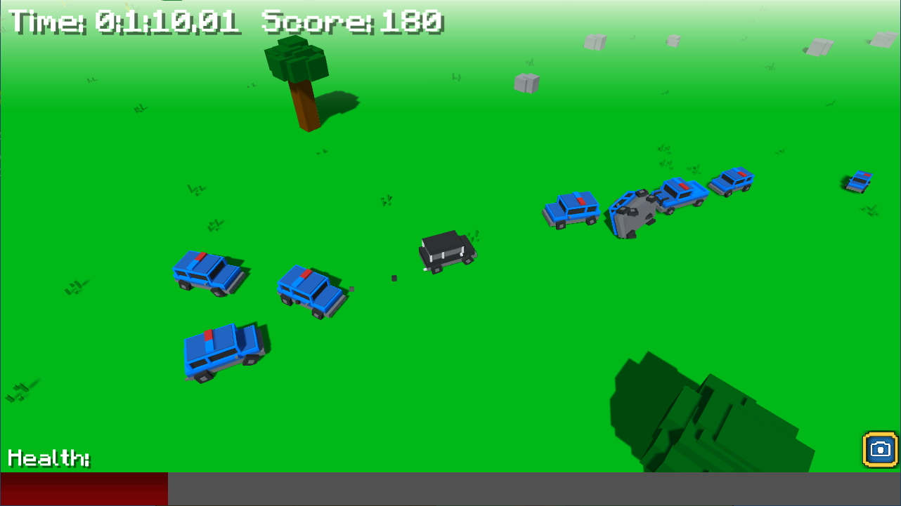
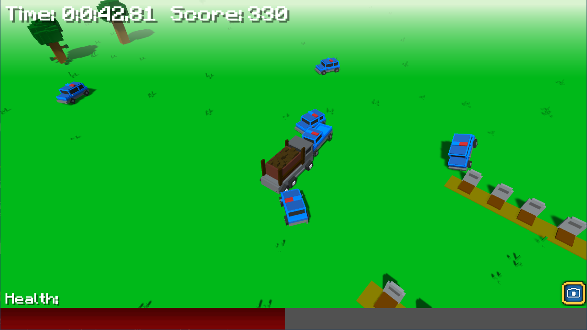
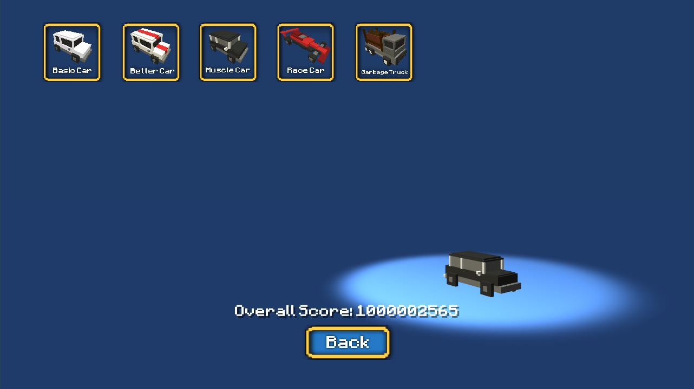
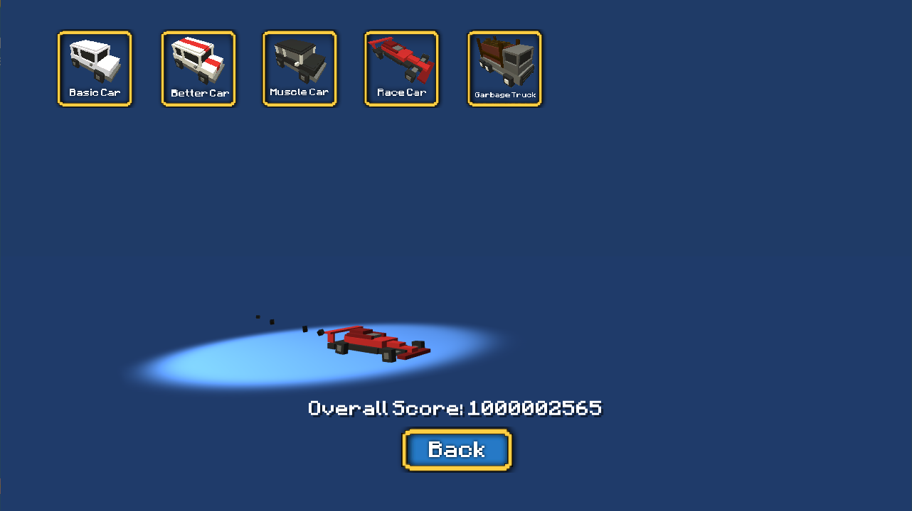
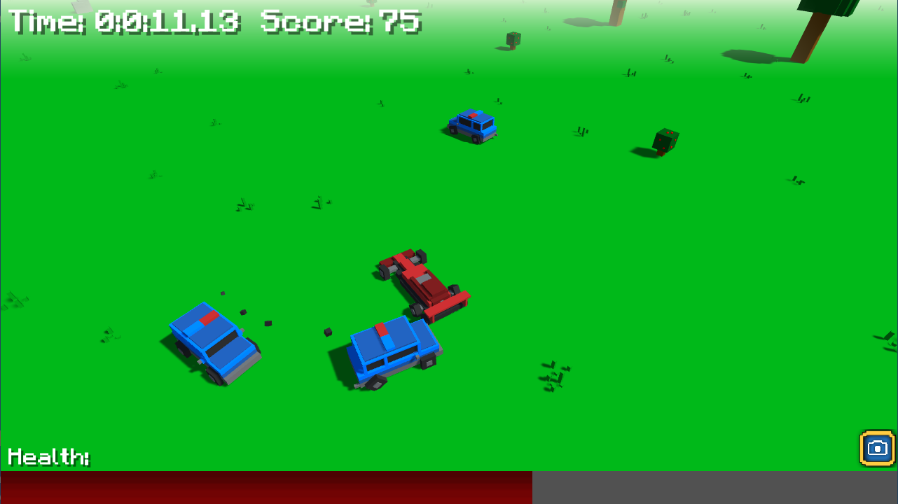
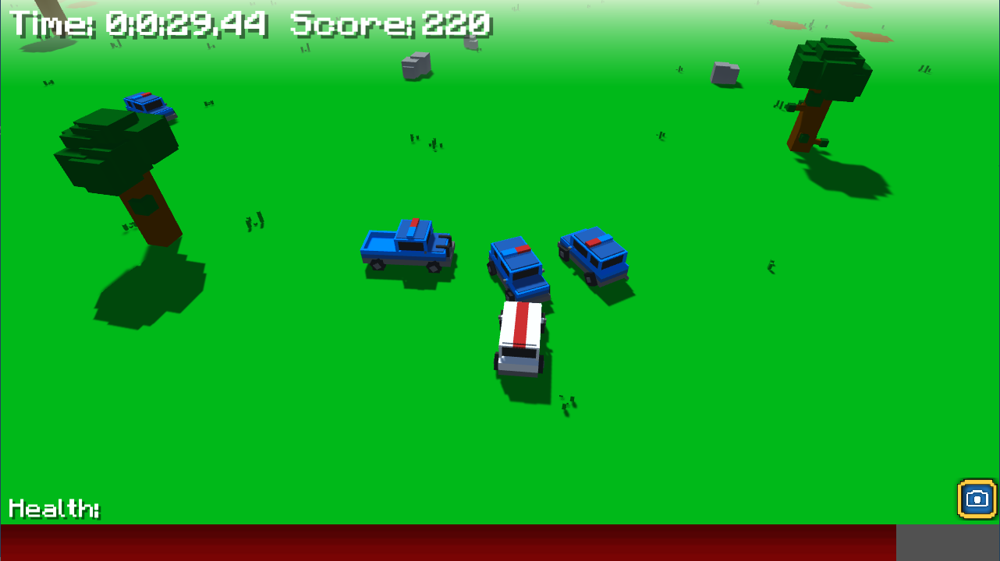
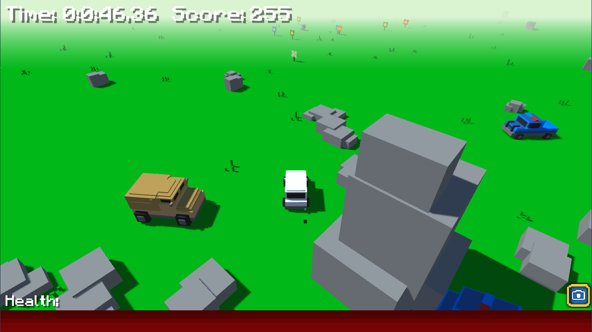
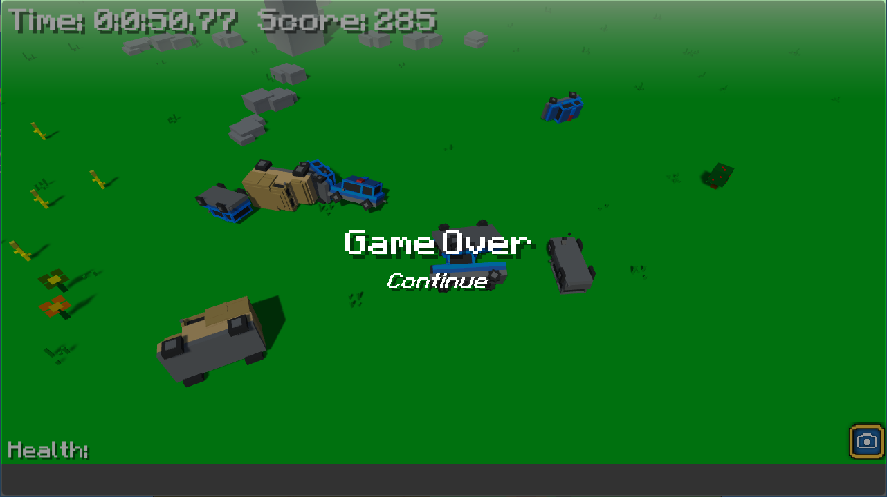
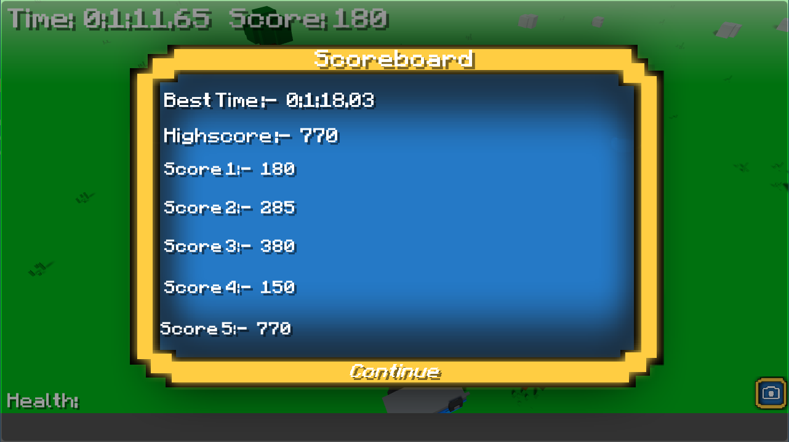

Overview
A simple 3D game where you havet to drive around a procedurally generatred map to escape from police vehicles. The police who chase you get progressively stronger with more reinforcements. As you play, you gain coins to unlock a few more vehicles. Each vehicle has different stats to suit playstyles.
 Vehicles
The player has several different vehicles to choose from after unlocking them through points. These vehicles differ in stats, such as, speed and health. Press F2 to cheat in points. The purpose of these was to learn Blender and usage of materials in Unity.
You can also drive the vehicles around in the main menu.
Additionally, the police have stronger vehicles which spawn in as the game progresses. First is a regular "police car".
Theres also a "police truck".
And finally theres a "military vehicle".
As seen in the screenshots, theres also a variety of scenery that spawns as you progress through the map.
Health & Score
Your health is decreased from vehicle impact or progressively decreases when you are flipped over. This enables for the enemy police vehicles to topple you to result in a game over. The longer you survive, the higher score you gain. Score can be used as points to buy new vehicles in the main menu.
You can see a scoreboard of your previous games. Your highest ever score is displayed at the top. The purpose of this was to demonstrate saving data after the game is closed.
